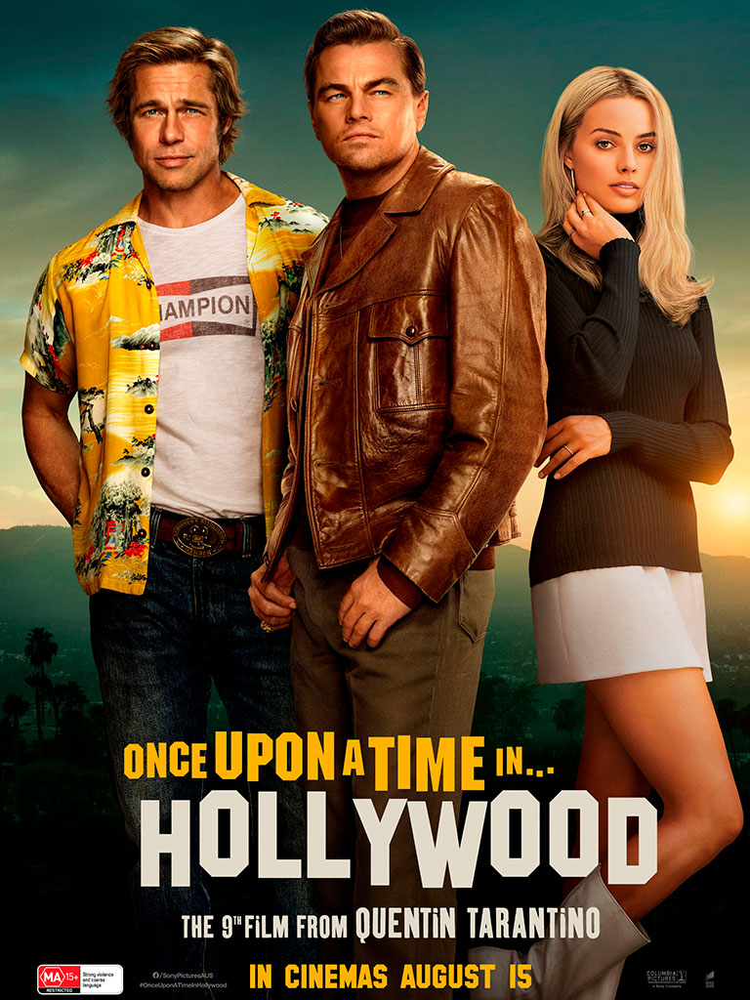

filmax
the movie
film
наша подборка
* для подробной информации нажмите на интересующий вас фильм
богемская рапсодия
Чествование группы Queen, их музыки и их выдающегося
вокалиста Фредди Меркьюри, который бросил вызов
стереотипам и победил условности, чтобы стать одним из
самых любимых артистов на планете. Фильм прослеживает
головокружительный путь группы к успеху благодаря их
культовым песням и революционному звуку, практически
распад коллектива, поскольку образ жизни Меркьюри выходит
из-под контроля, и их триумфальное воссоединение накануне
концерта Live Aid, ставшим одним из величайших выступлений
в истории рок-музыки.
 страна
страна
год
2018
Великобритания, США
режисер
Брайан Сингер
жанр
драма, биография
время
134
одержимость
Эндрю мечтает стать великим. Казалось бы, вот-вот его
мечта осуществится. Юношу замечает настоящий гений,
дирижер лучшего в стране оркестра. Желание Эндрю добиться
успеха быстро становится одержимостью, а безжалостный
наставник продолжает подталкивать его все дальше и дальше
— за пределы человеческих возможностей. Кто выйдет
победителем из этой схватки?
страна
год
2013
США
режисер
Дэмьен Шазелл
жанр
драма, музыка
время
106
середина 90-х
Калифорния, середина 90-х: компакт-диски еще не вытеснили
аудио-кассеты, скейт-бордисты еще не засветились на MTV, а
малыша Стиви все еще держат за ребенка и мама, и старший
брат. Все меняется, когда Стиви принимают во взрослую
тусовку скейтеров-отщепенцев, и чтобы доказать свою
крутость, он совершает одно смешное безумие за другим.
Мальчуган сам не замечает, как в череде прогулок, хип-хоп
посиделок и вечеринок развлечения перестают быть
невинными, а его детство неминуемо катится по направлению
к отрочеству, как по склону Беверли Хиллс.
страна
год
2018
США
режисер
Джона Хилл
жанр
драма, комедия
время
85

однажды в голливуде
Фильм повествует о череде событий, произошедших в
Голливуде в 1969 году, на закате его «золотого века».
Известный актер Рик Далтон и его дублер Клифф Бут пытаются
найти свое место в стремительно меняющемся мире
киноиндустрии.
страна
год
2019
США, Великобритания, Китай
режисер
Квентин Тарантино
жанр
драма, комедия
время
161
король лев
История об отважном львенке по имени Симба. Знакомые с
детства герои взрослеют, влюбляются, познают себя и
окружающий мир, совершают ошибки и делают правильный
выбор.
страна
год
2019
США
режисер
Джон Фавро
жанр
драма, приключения
время
118
В жизни ничего не добьешься, притворяясь кем-то другим.
"Богемская Рапсодия"
"Богемская Рапсодия"
Мои руки зарегистрированы как смертоносное оружие. Мы деремся, я
случайно убиваю тебя ... Попадаю в тюрьму.
"Однажды в Голливуде"
"Однажды в Голливуде"
— Это не мой отец. Это всего лишь мое отражение... — Посмотри
внимательней. Видишь? Он живет в тебе.
"Король Лев"
"Король Лев"
Нет в нашем языке слова вреднее и опаснее чем "Молодец".
"Одержимость"
"Одержимость"
трейлеры
актеры
имя
Леонардо Ди Каприо
дата рождения
11 ноября 1974 (44 года)
место рождения
Лос-Анджелес, Калифорния, США
карьера
с 1989
Впервые Леонардо появился перед камерой ещё в два с
половиной года, когда отец отвёл его на популярное детское
телешоу. В 14 лет Леонардо Ди Каприо решил стать актёром. Он
нашёл агента, которому понравились и его стрижка, и его имя.
Он снялся в более чем 30 рекламных роликах и в нескольких
сериалах: «Санта Барбара», «Новые приключения Лесси»,
«Розанна» и других.
Его дебютом в кино стал комедийный фильм ужасов «Зубастики 3». С 1991 года он снимался в сериале «Болезни роста», но вскоре покинул его, чтобы сняться с Робертом Де Ниро и Эллен Баркин в фильме «Жизнь этого парня». Позже, в 1993 году, он вместе с Джонни Деппом сыграл в драме «Что гложет Гилберта Грэйпа». В этом фильме он играл роль Арни, умственно отсталого брата Гилберта. Картина имела успех у критиков, а за свою актёрскую игру Ди Каприо был впервые номинирован на «Золотой глобус» и «Оскар». В 1995 году Ди Каприо получил роль в вестерне Сэма Рэйми «Быстрый и мёртвый», где помимо него играли Шэрон Стоун, Джин Хэкмен и Рассел Кроу. Также он снялся в фильме «Полное затмение» в роли поэта Артюра Рембо, влюбившего в себя своего старшего коллегу — поэта Поля Верлена (актёр Дэвид Тьюлис), которому он послал свои стихи, и Верлен, оценив его незаурядное дарование, пригласил его приехать в Париж. Лео заменил Ривера Феникса, умершего во время съёмок фильма. Актёр виртуозно сыграл гомосексуальную привязанность, связь и страсть, с бесконечными абсентными возлияниями, бродяжничеством, встречами-разлуками двух сложных творческих личностей в эпоху консервативных ценностей после подавления Парижской Коммуны. Однако, несмотря на положительные отзывы критиков, особого успеха в прокате фильм не имел. После этой работы Ди Каприо сыграл главную роль в экранизации автобиографического романа Джима Кэрролла «Дневник баскетболиста». Фильм рассказывает о шестнадцатилетнем подростке, играющем в баскетбол и пишущем хорошие стихи, но как только он впервые пробует наркотики, в его жизни происходит стремительное падение и деградация. Ди Каприо безуспешно пробовался на роль Робина в фильме «Бэтмен навсегда» (в итоге этого персонажа сыграл Крис О'Доннел).
В 1996 году Леонардо вместе с Клэр Дэйнс появился в фильме База Лурмана «Ромео + Джульетта». Фильм является интерпретацией трагедии «Ромео и Джульетта» Уильяма Шекспира, но действие пьесы перенесено в современность. Это был один из первых кассово успешных фильмов с участием Лео и любимый фильм его отца. Ди Каприо на презентации фильма «Пляж»; 2000 год. Позже он снова играл с Робертом Де Ниро в семейной драме «Комната Марвина», в которой он исполнил роль трудного подростка. В картине также снялись Дайан Китон и Мерил Стрип. Главной картиной, принёсшей Леонардо мировую популярность, стал «Титаник» Джеймса Кэмерона. Первоначально Лео хотел отказаться от роли, но в конце концов согласился, поскольку Кэмерон верил в его актёрские способности. Фильм стал главным культурным событием года и получил 11 премий «Оскар», однако церемония сопровождалась скандалом, поскольку киноакадемики не выдвинули Лео в категории «Лучшая мужская роль». В знак протеста более 200 поклонников актёра обратились в Академию с претензиями, а сам Лео наотрез отказался посещать церемонию. Тем не менее Лео был номинирован на премию «Золотой глобус». Именно роль в «Титанике» вывела Ди Каприо в ряды самых высокооплачиваемых актёров Голливуда. В 1997 году Леонардо был включён в список «50 самых красивых людей мира» по версии журнала People. Ди Каприо появился в камео в чёрно-белом фильме Вуди Аллена — «Знаменитость». В этом же году он играет короля Людовика XIV в картине «Человек в железной маске». Несмотря на холодную реакцию критиков, фильм собрал около 180 миллионов долларов в американском и мировом прокате. Ди Каприо был «удостоен» за эту роль антипремии «Золотая малина» как «Худший актёрский дуэт» за роли короля и его брата-близнеца. Следующим проектом Ди Каприо стала приключенческая драма Дэнни Бойла «Пляж», по одноимённому роману-бестселлеру Алекса Гарленда. Он сыграл американского туриста, который в поисках лучшей жизни приезжает в Таиланд, где отправляется на секретный остров. В картине также снялись Виржини Ледуайен и Тильда Суинтон. Лента, несмотря на неплохие кассовые сборы, как и предыдущий фильм Лео, не имела успеха у критиков. Ди Каприо был вновь номинирован на антипремию «Золотая малина», но в этот раз худшим артистом был признан Джон Траволта, за роли в фильмах «Поле битвы: Земля» и «Счастливые номера». Также в прокат вышла картина Кафе «Донс Плам», снятая в 1996 году по задумке самого же Ди Каприо.
В начале 2000-х годов Ди Каприо проявлял интерес к проекту «Американский психопат», но отказался от роли Патрика Бэтмана (его сыграл Кристиан Бейл). Ди Каприо, Скорсезе и Камерон Диас на Каннском кинофестивале, 2002 год Первым для Лео фильмом в 2002 году стала криминальная трагикомедия режиссёра Стивена Спилберга «Поймай меня, если сможешь». Фильм был основан на биографии Фрэнка Эбигнейла, который известен своими дерзкими преступлениями, совершёнными ещё в 1960-е годы. Фильм снимался в 147 различных местах и был снят всего за 52 дня. Фильм получил положительные отзывы критиков и стал для Ди Каприо одним из самых кассовых фильмов в его карьере. Лео в третий раз был номинирован на премию «Золотой глобус» как лучший исполнитель главной мужской роли. Также в 2002 году Ди Каприо впервые снялся у режиссёра Мартина Скорсезе в фильме «Банды Нью-Йорка» о столкновении между бандами «коренных» американцев и эмигрантов в Нью-Йорке. Мартин Скорсезе сначала хотел продать свою идею реализации фильма, но после того, как проектом заинтересовался Лео, режиссёр изменил своё решение. Фильм имел успех как у критиков, так и у зрителей. Однако на премии «Оскар» «Банды Нью-Йорка» постигла неудача — ни одной премии из 10 номинаций. Работу Леонардо высоко оценили, но он остался в тени Дэниела Дэй-Льюиса, игру которого кинопресса оценила выше. После совместной работы Скорсезе и Ди Каприо решили ещё раз поработать вместе. На этот раз Скорсезе решил снять фильм «Авиатор» про американского бизнесмена Говарда Хьюза. Лео потратил около полутора лет, готовясь к роли. «Авиатор» имел огромный успех. Леонардо выиграл свой первый «Золотой глобус» и был номинирован на «Оскар», но награда ушла к Джейми Фоксу за роль в фильме «Рэй». В 2006 году Леонардо снялся в двух картинах: «Кровавый алмаз» и «Отступники». Эдвард Цвик снял «Кровавый алмаз», в котором также сыграли Джимон Хонсу и Дженнифер Коннелли. Фильм рассказывает о молодом контрабандисте Дэнни Арчере, промышляющем поиском и сбытом алмазов во времена гражданской войны в Сьерра-Леоне в 1999 году. Фильм получил в целом одобрительные отзывы, а Ди Каприо получил очередную номинацию на «Золотой глобус» и «Оскар» (в обоих случаях Леонардо уступил премию Форесту Уитакеру). Во втором фильме, режиссёром которого был Мартин Скорсезе, Лео сыграл Уильяма Костигана, полицейского, которого внедрили в преступную группировку ирландской мафии. Фильм получил высочайшие оценки от критиков, а актёр выдвигался на «Золотой глобус» и BAFTA. В картине также сыграли Мэтт Деймон, Джек Николсон, Мартин Шин и Марк Уолберг.
В начале 2008 года Ди Каприо снялся в фильме Ридли Скотта «Совокупность лжи» по одноимённому роману Дэвида Игнатиуса. Фильм рассказывает о борьбе с террористами агентов ЦРУ. Для роли Леонардо перекрасил свои волосы и носил коричневые контактные линзы — он считал, что так фильм будет похож на политические триллеры 1970-х, такие как Заговор «Параллакс» и «Три дня Кондора». В этом же году Лео воссоединился с Кейт Уинслет и сыграл в драме «Дорога перемен». Фильм рассказывает про семейную пару, которая мечтает о том, чтобы порвать с рутинной жизнью и переехать в Париж. Леонардо получил очередную номинацию на «Золотой глобус». Ди Каприо на парижской премьере фильма «Волк с Уолл-стрит», декабрь 2013 года В 2010 году он вновь работал с Мартином Скорсезе над психологическим триллером «Остров проклятых», экранизации одноимённого романа Денниса Лихейна. В картине также играли Марк Руффало, Бен Кингсли и Мишель Уильямс. Лео сыграл маршала США Тедди Дэниелса, который направляется в Эшклиффскую лечебницу для душевнобольных преступников на остров Шаттер, чтобы расследовать дело об исчезновении одного из пациентов. В этом же году Кристофер Нолан предложил ему роль в своём научно-фантастическом фильме «Начало». Фильм был основан на идее осознанных сновидений. 1 ноября 2010 года компания Ди Каприо выкупила права на экранизацию романа Эрика Ларсона «Дьявол в белом городе». Книга рассказывает историю серийного убийцы Генри Говарда Холмса, ответственного за смерть многих женщин во время Всемирной выставки в Чикаго 1893 года. Лео также заявил, что исполнит роль серийного убийцы. Следующим проектом стала биографическая драма Клинта Иствуда «Дж. Эдгар» о первом директоре ФБР Джоне Эдгаре Гувере. В целом фильм был встречен критиками прохладно, американская киноакадемия также не удостоила фильм ни одной номинации на «Оскар». Тем не менее, картина принесла Леонардо ещё одну номинацию на «Золотой глобус» за лучшую роль в драме (премию получил Джордж Клуни за фильм «Потомки»). В 2012 году Квентин Тарантино предложил Ди Каприо роль в своём спагетти-вестерне «Джанго освобождённый». Лео согласился и впервые сыграл злодея, обаятельного и одновременно циничного и жестокого рабовладельца Кэлвина Кэнди, за что получил девятую номинацию на «Золотой глобус» (Ди Каприо уступил премию другому актёру из того же фильма — Кристофу Вальцу). Год спустя Леонардо принял предложение База Лурмана сыграть в очередной экранизации романа Фрэнсиса Скотт Фицджеральда «Великий Гэтсби». Фильм получил смешанные отзывы от критиков, однако игра Ди Каприо была оценена высоко. Леонардо вернулся к Скорсезе и снялся в его новом фильме «Волк с Уолл-стрит». В основу фильма легли одноимённые мемуары Джордана Белфорта, бывшего нью-йоркского брокера, который был осуждён за отмывание денег и ряд прочих финансовых преступлений. Фильм стал пятой совместной работой Скорсезе и Ди Каприо. После завершения съёмок Лео заявил, что собирается отдохнуть от кино. За эту актёрскую работу он был удостоен второго «Золотого глобуса», а также вновь выдвинут на премии «Оскар» и BAFTA. На «Оскар» Ди Каприо был также номинирован за продюсирование фильма.
С осени 2014 года Ди Каприо участвовал в многомесячных съёмках фильма «Выживший» режиссёра Алехандро Гонсалеса Иньярриту. Леонардо исполнил роль траппера Хью Гласса, который в начале XIX века был брошен умирать в диких местах на северо-западе США, однако сумел выжить, несмотря на серьёзные травмы. Съёмки проходили в Канаде и на юге Аргентины и завершились только летом 2015 года. Фильм вышел на экраны в конце 2015 года, и 28 февраля 2016 года принёс Ди Каприо долгожданный «Оскар» за главную мужскую роль («Оскары» также получили Гонсалес Иньярриту за режиссуру и Эммануэль Любецки за лучшую работу оператора). Ди Каприо за эту роль получил целый ряд других премий, в том числе очередной «Золотой глобус» и премию BAFTA. 19 января 2016 года Леонардо Ди Каприо на Всемирном экономическом форуме в Давосе (Швейцария) получил премию Crystal Award за вклад в защиту окружающей среды. Создав в 1998 году фонд Leonardo DiCaprio Foundation, Ди Каприо выделил более 30 миллионов долларов на развитие 70 инновационных проектов в сфере защиты окружающей среды в 40 странах. Речь, в частности, идёт о защите морской фауны или видов животных, которым грозит вымирание. «Вместе мы боремся за сохранение хрупкого климата нашей планеты против необратимых разрушений», — сказал в Давосе актёр, который в 2014 году был назначен послом мира ООН по проблемам климата. В марте 2017 года стало известно, что Ди Каприо намерен инвестировать средства в компанию Love The Wild, которая специализируется на самостоятельном выращивании морепродуктов и реализации их в замороженном виде. Актёр обосновал своё решение тем, что: «Эксплуатация наших океанов привела к тому, что многие морские экосистемы оказались на грани полного коллапса, что сокращает наши возможности использовать моря в качестве надежного источника пищи, как мы это делали в течение тысяч лет».
Его дебютом в кино стал комедийный фильм ужасов «Зубастики 3». С 1991 года он снимался в сериале «Болезни роста», но вскоре покинул его, чтобы сняться с Робертом Де Ниро и Эллен Баркин в фильме «Жизнь этого парня». Позже, в 1993 году, он вместе с Джонни Деппом сыграл в драме «Что гложет Гилберта Грэйпа». В этом фильме он играл роль Арни, умственно отсталого брата Гилберта. Картина имела успех у критиков, а за свою актёрскую игру Ди Каприо был впервые номинирован на «Золотой глобус» и «Оскар». В 1995 году Ди Каприо получил роль в вестерне Сэма Рэйми «Быстрый и мёртвый», где помимо него играли Шэрон Стоун, Джин Хэкмен и Рассел Кроу. Также он снялся в фильме «Полное затмение» в роли поэта Артюра Рембо, влюбившего в себя своего старшего коллегу — поэта Поля Верлена (актёр Дэвид Тьюлис), которому он послал свои стихи, и Верлен, оценив его незаурядное дарование, пригласил его приехать в Париж. Лео заменил Ривера Феникса, умершего во время съёмок фильма. Актёр виртуозно сыграл гомосексуальную привязанность, связь и страсть, с бесконечными абсентными возлияниями, бродяжничеством, встречами-разлуками двух сложных творческих личностей в эпоху консервативных ценностей после подавления Парижской Коммуны. Однако, несмотря на положительные отзывы критиков, особого успеха в прокате фильм не имел. После этой работы Ди Каприо сыграл главную роль в экранизации автобиографического романа Джима Кэрролла «Дневник баскетболиста». Фильм рассказывает о шестнадцатилетнем подростке, играющем в баскетбол и пишущем хорошие стихи, но как только он впервые пробует наркотики, в его жизни происходит стремительное падение и деградация. Ди Каприо безуспешно пробовался на роль Робина в фильме «Бэтмен навсегда» (в итоге этого персонажа сыграл Крис О'Доннел).
В 1996 году Леонардо вместе с Клэр Дэйнс появился в фильме База Лурмана «Ромео + Джульетта». Фильм является интерпретацией трагедии «Ромео и Джульетта» Уильяма Шекспира, но действие пьесы перенесено в современность. Это был один из первых кассово успешных фильмов с участием Лео и любимый фильм его отца. Ди Каприо на презентации фильма «Пляж»; 2000 год. Позже он снова играл с Робертом Де Ниро в семейной драме «Комната Марвина», в которой он исполнил роль трудного подростка. В картине также снялись Дайан Китон и Мерил Стрип. Главной картиной, принёсшей Леонардо мировую популярность, стал «Титаник» Джеймса Кэмерона. Первоначально Лео хотел отказаться от роли, но в конце концов согласился, поскольку Кэмерон верил в его актёрские способности. Фильм стал главным культурным событием года и получил 11 премий «Оскар», однако церемония сопровождалась скандалом, поскольку киноакадемики не выдвинули Лео в категории «Лучшая мужская роль». В знак протеста более 200 поклонников актёра обратились в Академию с претензиями, а сам Лео наотрез отказался посещать церемонию. Тем не менее Лео был номинирован на премию «Золотой глобус». Именно роль в «Титанике» вывела Ди Каприо в ряды самых высокооплачиваемых актёров Голливуда. В 1997 году Леонардо был включён в список «50 самых красивых людей мира» по версии журнала People. Ди Каприо появился в камео в чёрно-белом фильме Вуди Аллена — «Знаменитость». В этом же году он играет короля Людовика XIV в картине «Человек в железной маске». Несмотря на холодную реакцию критиков, фильм собрал около 180 миллионов долларов в американском и мировом прокате. Ди Каприо был «удостоен» за эту роль антипремии «Золотая малина» как «Худший актёрский дуэт» за роли короля и его брата-близнеца. Следующим проектом Ди Каприо стала приключенческая драма Дэнни Бойла «Пляж», по одноимённому роману-бестселлеру Алекса Гарленда. Он сыграл американского туриста, который в поисках лучшей жизни приезжает в Таиланд, где отправляется на секретный остров. В картине также снялись Виржини Ледуайен и Тильда Суинтон. Лента, несмотря на неплохие кассовые сборы, как и предыдущий фильм Лео, не имела успеха у критиков. Ди Каприо был вновь номинирован на антипремию «Золотая малина», но в этот раз худшим артистом был признан Джон Траволта, за роли в фильмах «Поле битвы: Земля» и «Счастливые номера». Также в прокат вышла картина Кафе «Донс Плам», снятая в 1996 году по задумке самого же Ди Каприо.
В начале 2000-х годов Ди Каприо проявлял интерес к проекту «Американский психопат», но отказался от роли Патрика Бэтмана (его сыграл Кристиан Бейл). Ди Каприо, Скорсезе и Камерон Диас на Каннском кинофестивале, 2002 год Первым для Лео фильмом в 2002 году стала криминальная трагикомедия режиссёра Стивена Спилберга «Поймай меня, если сможешь». Фильм был основан на биографии Фрэнка Эбигнейла, который известен своими дерзкими преступлениями, совершёнными ещё в 1960-е годы. Фильм снимался в 147 различных местах и был снят всего за 52 дня. Фильм получил положительные отзывы критиков и стал для Ди Каприо одним из самых кассовых фильмов в его карьере. Лео в третий раз был номинирован на премию «Золотой глобус» как лучший исполнитель главной мужской роли. Также в 2002 году Ди Каприо впервые снялся у режиссёра Мартина Скорсезе в фильме «Банды Нью-Йорка» о столкновении между бандами «коренных» американцев и эмигрантов в Нью-Йорке. Мартин Скорсезе сначала хотел продать свою идею реализации фильма, но после того, как проектом заинтересовался Лео, режиссёр изменил своё решение. Фильм имел успех как у критиков, так и у зрителей. Однако на премии «Оскар» «Банды Нью-Йорка» постигла неудача — ни одной премии из 10 номинаций. Работу Леонардо высоко оценили, но он остался в тени Дэниела Дэй-Льюиса, игру которого кинопресса оценила выше. После совместной работы Скорсезе и Ди Каприо решили ещё раз поработать вместе. На этот раз Скорсезе решил снять фильм «Авиатор» про американского бизнесмена Говарда Хьюза. Лео потратил около полутора лет, готовясь к роли. «Авиатор» имел огромный успех. Леонардо выиграл свой первый «Золотой глобус» и был номинирован на «Оскар», но награда ушла к Джейми Фоксу за роль в фильме «Рэй». В 2006 году Леонардо снялся в двух картинах: «Кровавый алмаз» и «Отступники». Эдвард Цвик снял «Кровавый алмаз», в котором также сыграли Джимон Хонсу и Дженнифер Коннелли. Фильм рассказывает о молодом контрабандисте Дэнни Арчере, промышляющем поиском и сбытом алмазов во времена гражданской войны в Сьерра-Леоне в 1999 году. Фильм получил в целом одобрительные отзывы, а Ди Каприо получил очередную номинацию на «Золотой глобус» и «Оскар» (в обоих случаях Леонардо уступил премию Форесту Уитакеру). Во втором фильме, режиссёром которого был Мартин Скорсезе, Лео сыграл Уильяма Костигана, полицейского, которого внедрили в преступную группировку ирландской мафии. Фильм получил высочайшие оценки от критиков, а актёр выдвигался на «Золотой глобус» и BAFTA. В картине также сыграли Мэтт Деймон, Джек Николсон, Мартин Шин и Марк Уолберг.
В начале 2008 года Ди Каприо снялся в фильме Ридли Скотта «Совокупность лжи» по одноимённому роману Дэвида Игнатиуса. Фильм рассказывает о борьбе с террористами агентов ЦРУ. Для роли Леонардо перекрасил свои волосы и носил коричневые контактные линзы — он считал, что так фильм будет похож на политические триллеры 1970-х, такие как Заговор «Параллакс» и «Три дня Кондора». В этом же году Лео воссоединился с Кейт Уинслет и сыграл в драме «Дорога перемен». Фильм рассказывает про семейную пару, которая мечтает о том, чтобы порвать с рутинной жизнью и переехать в Париж. Леонардо получил очередную номинацию на «Золотой глобус». Ди Каприо на парижской премьере фильма «Волк с Уолл-стрит», декабрь 2013 года В 2010 году он вновь работал с Мартином Скорсезе над психологическим триллером «Остров проклятых», экранизации одноимённого романа Денниса Лихейна. В картине также играли Марк Руффало, Бен Кингсли и Мишель Уильямс. Лео сыграл маршала США Тедди Дэниелса, который направляется в Эшклиффскую лечебницу для душевнобольных преступников на остров Шаттер, чтобы расследовать дело об исчезновении одного из пациентов. В этом же году Кристофер Нолан предложил ему роль в своём научно-фантастическом фильме «Начало». Фильм был основан на идее осознанных сновидений. 1 ноября 2010 года компания Ди Каприо выкупила права на экранизацию романа Эрика Ларсона «Дьявол в белом городе». Книга рассказывает историю серийного убийцы Генри Говарда Холмса, ответственного за смерть многих женщин во время Всемирной выставки в Чикаго 1893 года. Лео также заявил, что исполнит роль серийного убийцы. Следующим проектом стала биографическая драма Клинта Иствуда «Дж. Эдгар» о первом директоре ФБР Джоне Эдгаре Гувере. В целом фильм был встречен критиками прохладно, американская киноакадемия также не удостоила фильм ни одной номинации на «Оскар». Тем не менее, картина принесла Леонардо ещё одну номинацию на «Золотой глобус» за лучшую роль в драме (премию получил Джордж Клуни за фильм «Потомки»). В 2012 году Квентин Тарантино предложил Ди Каприо роль в своём спагетти-вестерне «Джанго освобождённый». Лео согласился и впервые сыграл злодея, обаятельного и одновременно циничного и жестокого рабовладельца Кэлвина Кэнди, за что получил девятую номинацию на «Золотой глобус» (Ди Каприо уступил премию другому актёру из того же фильма — Кристофу Вальцу). Год спустя Леонардо принял предложение База Лурмана сыграть в очередной экранизации романа Фрэнсиса Скотт Фицджеральда «Великий Гэтсби». Фильм получил смешанные отзывы от критиков, однако игра Ди Каприо была оценена высоко. Леонардо вернулся к Скорсезе и снялся в его новом фильме «Волк с Уолл-стрит». В основу фильма легли одноимённые мемуары Джордана Белфорта, бывшего нью-йоркского брокера, который был осуждён за отмывание денег и ряд прочих финансовых преступлений. Фильм стал пятой совместной работой Скорсезе и Ди Каприо. После завершения съёмок Лео заявил, что собирается отдохнуть от кино. За эту актёрскую работу он был удостоен второго «Золотого глобуса», а также вновь выдвинут на премии «Оскар» и BAFTA. На «Оскар» Ди Каприо был также номинирован за продюсирование фильма.
С осени 2014 года Ди Каприо участвовал в многомесячных съёмках фильма «Выживший» режиссёра Алехандро Гонсалеса Иньярриту. Леонардо исполнил роль траппера Хью Гласса, который в начале XIX века был брошен умирать в диких местах на северо-западе США, однако сумел выжить, несмотря на серьёзные травмы. Съёмки проходили в Канаде и на юге Аргентины и завершились только летом 2015 года. Фильм вышел на экраны в конце 2015 года, и 28 февраля 2016 года принёс Ди Каприо долгожданный «Оскар» за главную мужскую роль («Оскары» также получили Гонсалес Иньярриту за режиссуру и Эммануэль Любецки за лучшую работу оператора). Ди Каприо за эту роль получил целый ряд других премий, в том числе очередной «Золотой глобус» и премию BAFTA. 19 января 2016 года Леонардо Ди Каприо на Всемирном экономическом форуме в Давосе (Швейцария) получил премию Crystal Award за вклад в защиту окружающей среды. Создав в 1998 году фонд Leonardo DiCaprio Foundation, Ди Каприо выделил более 30 миллионов долларов на развитие 70 инновационных проектов в сфере защиты окружающей среды в 40 странах. Речь, в частности, идёт о защите морской фауны или видов животных, которым грозит вымирание. «Вместе мы боремся за сохранение хрупкого климата нашей планеты против необратимых разрушений», — сказал в Давосе актёр, который в 2014 году был назначен послом мира ООН по проблемам климата. В марте 2017 года стало известно, что Ди Каприо намерен инвестировать средства в компанию Love The Wild, которая специализируется на самостоятельном выращивании морепродуктов и реализации их в замороженном виде. Актёр обосновал своё решение тем, что: «Эксплуатация наших океанов привела к тому, что многие морские экосистемы оказались на грани полного коллапса, что сокращает наши возможности использовать моря в качестве надежного источника пищи, как мы это делали в течение тысяч лет».
имя
Брэдли Питт
дата рождения
18 декабря 1963 (55 лет)
место рождения
Шони, Оклахома, США
карьера
с 1987
Прежде чем к нему пришёл актёрский успех, Питт работал
водителем, перевозчиком мебели и даже зазывалой в сети
ресторанов «El Pollo Loco» и должен был в костюме
гигантского цыплёнка приглашать прохожих посетить их
заведение. Параллельно с этим он посещал актёрские курсы.
Его карьера началась в 1987 году, он сыграл эпизодические
роли в таких фильмах, как «Нет выхода», «Нейтральная полоса»
и «Меньше, чем ноль». Дебютировал на телевидении, сыграв в
нескольких эпизодах сериалов «Другой мир» и «Проблемы
роста» , позже появился в сериале «Даллас». В следующем году
сыграл в сериале «Джамп стрит, 21». В 1988 году получил
ведущую роль в фильме «Тёмная сторона Солнца». Однако, пока
монтировали фильм, гражданская война охватила ту
часть Югославии, где проходили съёмки. Большая часть
отснятого материала считалась утерянной до 1998 года, когда
фильм наконец вышел на экраны. Питт снялся в двух картинах,
которые вышли в 1989 году. В фильме «Счастливы вместе» ему
досталась роль второго плана, а в картине «Сокращая класс»
он сыграл главную роль. В том же году он появился в эпизодах
сериалов «Президент класса» и «Кошмары Фредди», а также
вновь в сериале «Проблемы роста». В телевизионном фильме
«Слишком молода, чтобы умереть?» Питт сыграл наркомана,
который убеждает героиню Джульетт Льюис устроиться
танцовщицей в ночной клуб, и с этого момента девушка
погружается в мир наркотиков, алкоголя, проституции. Он
также снялся в шести эпизодах сериала «Дни славы» и в
телевизионном фильме «Картина». После второстепенных ролей в
сериалах Питт получил роль Джея Ди в фильме «Тельма и Луиза»
(1991). Его любовная сцена с Джиной Дэвис определила его как
новый секс-символ. За этим последовала главная роль в
низкобюджетном фильме «Джонни Замша» и главная роль в
мультипликационном фильме Ральфа Бакши «Параллельный мир»
(1992). После съёмок в драме Роберта Редфорда «Там, где
течёт река» (1992) Питт признался, что чувствовал давление и
думал, что сыграл «слишком слабо». Питт полагал, что извлёк
выгоду, работая с такой талантливой съёмочной группой. Он
сравнил работу с Редфордом с игрой в теннис, говоря: «Играя
с тем, кто лучше вас, вы сами становитесь лучше». В 1993
году он воссоединился с Джульетт Льюис в картине
«Калифорния», сыграв Эрла Грейса — серийного убийцу и
бойфренда героини Льюис. В фильме «Настоящая любовь» Питт
сыграл роль Флойда, который лишь курит травку и смотрит
телевизор.
В 1994 году в карьере Питта наступил переломный момент. Сначала он сыграл Луи де Пон дю Лака в фильме «Интервью с вампиром» по одноимённой книге Энн Райс и получил две премии на MTV Movie Awards 1995. Затем он снялся в фильме «Легенды осени» по одноимённому роману Джима Харрисона, сыграв Тристана Ладлоу, сына полковника Уильяма Ладлоу (Энтони Хопкинс). За эту роль Питт был впервые выдвинут на премию «Золотой глобус» в номинации «За лучшую мужскую роль». Хотя фильм получил смешанные отзывы, игра Питта была высоко оценена критиками. В 1995 году вместе с Морганом Фрименом, Гвинет Пэлтроу и Кевином Спейси Брэд Питт снялся в триллере Дэвида Финчера «Семь». Сам актёр назвал фильм великим и сказал, что участие в нём помогло ему расширить свои актёрские горизонты. Его игру высоко оценили критики, а журнал Empire включил его в список 25 самых сексуальных звёзд в истории кино. Питт был дважды назван «Самым сексуальным мужчиной среди ныне живущих» журналом People, став первым человеком, удостоившимся этого звания более одного раза. После фильма «Семь» Питт согласился сыграть второстепенную роль в фильме Терри Гиллиама «12 обезьян», главную роль в котором исполнил Брюс Уиллис. Фильм получил положительные отзывы критиков, в особенности была отмечена игра Питта. За роль Джеффри Гоинса актёр получил свой первый «Золотой глобус» и номинацию на «Оскар». Питт снялся в криминальной драме Барри Левинсона «Спящие» по одноимённому роману Лоренцо Каркатерры. Фильм получил смешанные отзывы. Затем он вместе с Харрисоном Фордом сыграл в фильме «Собственность дьявола» о гражданской войне в Северной Ирландии. Для роли ему пришлось говорить с ирландским акцентом, газета San Francisco Chronicle писала: «Питт использует верный тон для воссоздания акцента, но временами его ирландский акцент слишком убедительный, и трудно понять, о чём он говорит». Год спустя он исполнил роль Генриха Харрера в биографической драме Жан-Жака Анно «Семь лет в Тибете». Брэд тренировался в течение нескольких месяцев специально для роли. Вместе с партнером по фильму Дэвидом Тьюлисом он занимался альпинизмом в Калифорнии и Альпах. Питт получил главную роль в фильме «Знакомьтесь, Джо Блэк» 1998 года. Он изображал олицетворение смерти, которая вселилась в тело молодого человека, чтобы узнать, каково это — быть человеком. Фильм получил смешанные отзывы. По словам критика Микка ЛаСелла, Питт не смог убедить зрителя, что он знает все тайны смерти и вечности.
В 1999 году Питт сыграл одну из своих самых известных ролей в фильме «Бойцовский клуб» Дэвида Финчера по роману Чака Паланика. Для роли Тайлера Дёрдена Брэд брал уроки бокса, тхэквондо и грэпплинга. Во время съёмок у актёра откололась часть зуба, но он оставил скол, так как решил, что это соответствует характеру его героя. Премьера фильма состоялась на Венецианском кинофестивале 1999 года. Несмотря на полярное мнение критиков, игру Брэда тепло приняли. Будучи большим поклонником фильма «Карты, деньги, два ствола», Питт встретился с Гаем Ричи и попросил его о роли в следующей картине. Питт получил роль Микки-цыгана в фильме «Большой куш» после того, как выяснилось, что он не может достоверно сымитировать лондонский акцент. Вместе с ним в фильме снялись Бенисио Дель Торо, Джейсон Стейтем, Деннис Фарина, Раде Шербеджия и Винни Джонс. Питт, Деймон и Клуни. Вместе с Джулией Робертс Питт сыграл в романтической комедии «Мексиканец», а в политическом триллере «Шпионские игры» его партнером был Роберт Редфорд. В том же 2001 году Брэд появился в эпизоде сериала «Друзья», в котором играла его жена Дженнифер Энистон. За этот эпизод он был номинирован на «Эмми» как «Лучший приглашённый актёр в комедийном телесериале». Помимо этого, Питт снялся в ремейке одноимённого фильма 1960 года — «Одиннадцать друзей Оушена», вышедшем на экраны также в 2001 году. Вместе с ним в фильме снимались Джордж Клуни, Мэтт Деймон, Джулия Робертс, Энди Гарсиа и другие известные актёры. Фильм был тепло встречен критиками и имел внушительный кассовый успех. В 2003 году Брэд Питт впервые встал по ту сторону экрана, озвучив мультфильм «Синдбад: Легенда семи морей» и мультсериал «Царь горы».
В 2004 году в прокат вышли два фильма с участием Питта. В исторической драме «Троя» по мотивам поэмы Гомера «Илиада» актёр сыграл роль Ахиллеса. Он потратил 6 месяцев, чтобы научиться обращаться с мечом. Это был первый фильм, производством которого занималась собственная кинокомпания Питта, Plan B Entertainment, которую он основал двумя годами ранее вместе с супругой Дженнифер Энистон и главой Paramount Pictures Брэдом Грэем. Фильм имел коммерческий успех, собрав в мировом прокате 497 млн долларов. Сборы от другого фильма 2004 года с участием актёра — «Двенадцать друзей Оушена» — составили 362 млн долларов. Следующей картиной Питта стал комедийный боевик «Мистер и миссис Смит» (2005), в котором он сыграл вместе со своей будущей спутницей жизни — Анджелиной Джоли (с которой на этих съёмках и сблизился). Собрав в прокате 478 млн долларов, фильм стал одним из хитов 2005 года. Питт неоднократно появлялся в телевизионных рекламных роликах. В 2005 году он снялся для американского рынка в рекламе для Heineken, а для дальневосточного рынка — в рекламе для Хонды Акуры, в которой он появился вместе с американской супермоделью Татьяной Сорокко. Питт также снялся в японской рекламе для SoftBank и Edwin Jeans. Продолжительное время снимался в рекламе часовой марки Tag Heuer. Вместе с Кейт Бланшетт Питт сыграл в драме Алехандро Гонсалеса Иньярриту «Вавилон». Игра Питта была хорошо оценена, а журнал Seattle Post-Intelligencer заметил, что он дал видимость для всего фильма. Позже актёр заявил, что принятие предложения о съёмках было, пожалуй, лучшим решением в его карьере. Фильм был показан на Каннском кинофестивале и Кинофестивале в Торонто. Фильм получил 7 номинаций на премию «Оскар», а сам актёр был номинирован на «Золотой глобус». В этом же году компания Питта продюсировала фильм Мартина Скорсезе «Отступники», и хотя сам актёр был одним из продюсеров, но «Оскар» за лучший фильм получил только Грэм Кинг. Затем Брэд вернулся к роли Расти Райана в фильме «Тринадцать друзей Оушена». Как и предыдущим частям трилогии, фильму сопутствовал кассовый успех — он собрал в прокате 311 млн долларов. В фильме «Как трусливый Роберт Форд убил Джесси Джеймса» (2007) по одноимённой новелле Рона Хансена Питт исполнил роль знаменитого американского преступника XIX века Джесси Джеймса. Эту картину также продюсировала компания Брэда Питта. Фильм был показан на Венецианском кинофестивале, а актёр за свою роль получил кубок Вольпи. Следующим проектом актёра стала чёрная комедия братьев Коэн «После прочтения сжечь» (2008). Фильм был хорошо принят, а игра Питта была названа одной из самых забавных. В этом же году актёр сыграл главного героя в фильме «Загадочная история Бенджамина Баттона», который рождается старцем и проживает свою жизнь «наоборот», картина основана на одноимённом рассказе Фрэнсиса Скотт Фицджеральда. Брэд Питт получил вторую номинацию на премию «Оскар» и четвёртую на премию «Золотой глобус». Всего фильм получил 13 номинаций на «Оскар» и собрал в прокате 329 млн долларов. На премьере «Бесславных ублюдков» в Берлине Затем актёр сыграл охотника на нацистов Альдо «Апачи» Рэйна в фильме Квентина Тарантино «Бесславные ублюдки», который был показан на Каннском кинофестивале 2009 года. Фильм стал кассовым хитом, собрав 311 млн долларов, и также имел благоприятные отзывы. Картина получила многочисленные премии и номинации, включая восемь номинаций на премию «Оскар». Брэд Питт выступил продюсером фильмов «Жена путешественника во времени» Роберта Швентке и «Пипец» Мэттью Вона. В мультфильме «Мегамозг» Питт озвучил Мачомена. Вместе с Шон Пенном и Джессикой Честейн актёр снялся в фильме Терренса Малика «Древо жизни», получившем «Золотую пальмовую ветвь» на Каннском кинофестивале. Роль бейсбольного менеджера Билли Бина в биографической драме «Человек, который изменил всё» принесла Питту очередные номинации на премии «Оскар», «Золотой глобус» и BAFTA. Выводы критиков насчёт его перевоплощения были единодушно благосклонными, некоторые даже называли эту роль лучшей в карьере Питта, сравнив его актёрскую работу с игрой Грегори Пека в фильме «Убить пересмешника»[10]. В картине «Ограбление казино», снятой по новелле Джорджа В. Хиггинса «Сделка Когана» и показанной на Каннском кинофестивале 2012 года, Питт исполнил роль киллера Джеки Когана. В 2013 году он сыграл и выступил продюсером в фильме «Война миров Z» — постапокалиптическом боевике по одноимённому роману Макса Брукса. Картина собрала в прокате 539 млн долларов, став одним из самых кассовых фильмов в карьере Брэда Питта. В этом же году он продюсировал историческую драму режиссёра Стива Маккуина «12 лет рабства», и снялся в ней в небольшой роли. Подавляющим числом критиков фильм был признан лучшим в году, а Брэд Питт получил премию BAFTA и свой первый «Оскар» как продюсер фильма. Актёр также сыграл второстепенную роль в фильме Ридли Скотта «Советник», в котором помимо него снялись Майкл Фассбендер, Пенелопа Крус, Камерон Диас и Хавьер Бардем. В 2014 году на телеканале ABC Studios вышел телевизионный научно-фантастический телесериал «Воскрешение» в жанре драмы, ставший первой продюсерской работой компании Plan B Entertainment на телевидении. Брэд Питт выступил в качестве исполнительного продюсера проекта. В том же 2014 году на экраны вышел исторический боевик с участием Брэда Питта «Ярость», повествующий о событиях на Западном фронте в конце Второй мировой войны. 21 февраля 2019 года в российский прокат вышла картина «Власть», новый продюсерский проект Питта. Фильм имел все шансы получить несколько премий Оскар, однако получил лишь за лучший грим. Картина также получила 6 номинаций на «Золотой глобус».
В 1994 году в карьере Питта наступил переломный момент. Сначала он сыграл Луи де Пон дю Лака в фильме «Интервью с вампиром» по одноимённой книге Энн Райс и получил две премии на MTV Movie Awards 1995. Затем он снялся в фильме «Легенды осени» по одноимённому роману Джима Харрисона, сыграв Тристана Ладлоу, сына полковника Уильяма Ладлоу (Энтони Хопкинс). За эту роль Питт был впервые выдвинут на премию «Золотой глобус» в номинации «За лучшую мужскую роль». Хотя фильм получил смешанные отзывы, игра Питта была высоко оценена критиками. В 1995 году вместе с Морганом Фрименом, Гвинет Пэлтроу и Кевином Спейси Брэд Питт снялся в триллере Дэвида Финчера «Семь». Сам актёр назвал фильм великим и сказал, что участие в нём помогло ему расширить свои актёрские горизонты. Его игру высоко оценили критики, а журнал Empire включил его в список 25 самых сексуальных звёзд в истории кино. Питт был дважды назван «Самым сексуальным мужчиной среди ныне живущих» журналом People, став первым человеком, удостоившимся этого звания более одного раза. После фильма «Семь» Питт согласился сыграть второстепенную роль в фильме Терри Гиллиама «12 обезьян», главную роль в котором исполнил Брюс Уиллис. Фильм получил положительные отзывы критиков, в особенности была отмечена игра Питта. За роль Джеффри Гоинса актёр получил свой первый «Золотой глобус» и номинацию на «Оскар». Питт снялся в криминальной драме Барри Левинсона «Спящие» по одноимённому роману Лоренцо Каркатерры. Фильм получил смешанные отзывы. Затем он вместе с Харрисоном Фордом сыграл в фильме «Собственность дьявола» о гражданской войне в Северной Ирландии. Для роли ему пришлось говорить с ирландским акцентом, газета San Francisco Chronicle писала: «Питт использует верный тон для воссоздания акцента, но временами его ирландский акцент слишком убедительный, и трудно понять, о чём он говорит». Год спустя он исполнил роль Генриха Харрера в биографической драме Жан-Жака Анно «Семь лет в Тибете». Брэд тренировался в течение нескольких месяцев специально для роли. Вместе с партнером по фильму Дэвидом Тьюлисом он занимался альпинизмом в Калифорнии и Альпах. Питт получил главную роль в фильме «Знакомьтесь, Джо Блэк» 1998 года. Он изображал олицетворение смерти, которая вселилась в тело молодого человека, чтобы узнать, каково это — быть человеком. Фильм получил смешанные отзывы. По словам критика Микка ЛаСелла, Питт не смог убедить зрителя, что он знает все тайны смерти и вечности.
В 1999 году Питт сыграл одну из своих самых известных ролей в фильме «Бойцовский клуб» Дэвида Финчера по роману Чака Паланика. Для роли Тайлера Дёрдена Брэд брал уроки бокса, тхэквондо и грэпплинга. Во время съёмок у актёра откололась часть зуба, но он оставил скол, так как решил, что это соответствует характеру его героя. Премьера фильма состоялась на Венецианском кинофестивале 1999 года. Несмотря на полярное мнение критиков, игру Брэда тепло приняли. Будучи большим поклонником фильма «Карты, деньги, два ствола», Питт встретился с Гаем Ричи и попросил его о роли в следующей картине. Питт получил роль Микки-цыгана в фильме «Большой куш» после того, как выяснилось, что он не может достоверно сымитировать лондонский акцент. Вместе с ним в фильме снялись Бенисио Дель Торо, Джейсон Стейтем, Деннис Фарина, Раде Шербеджия и Винни Джонс. Питт, Деймон и Клуни. Вместе с Джулией Робертс Питт сыграл в романтической комедии «Мексиканец», а в политическом триллере «Шпионские игры» его партнером был Роберт Редфорд. В том же 2001 году Брэд появился в эпизоде сериала «Друзья», в котором играла его жена Дженнифер Энистон. За этот эпизод он был номинирован на «Эмми» как «Лучший приглашённый актёр в комедийном телесериале». Помимо этого, Питт снялся в ремейке одноимённого фильма 1960 года — «Одиннадцать друзей Оушена», вышедшем на экраны также в 2001 году. Вместе с ним в фильме снимались Джордж Клуни, Мэтт Деймон, Джулия Робертс, Энди Гарсиа и другие известные актёры. Фильм был тепло встречен критиками и имел внушительный кассовый успех. В 2003 году Брэд Питт впервые встал по ту сторону экрана, озвучив мультфильм «Синдбад: Легенда семи морей» и мультсериал «Царь горы».
В 2004 году в прокат вышли два фильма с участием Питта. В исторической драме «Троя» по мотивам поэмы Гомера «Илиада» актёр сыграл роль Ахиллеса. Он потратил 6 месяцев, чтобы научиться обращаться с мечом. Это был первый фильм, производством которого занималась собственная кинокомпания Питта, Plan B Entertainment, которую он основал двумя годами ранее вместе с супругой Дженнифер Энистон и главой Paramount Pictures Брэдом Грэем. Фильм имел коммерческий успех, собрав в мировом прокате 497 млн долларов. Сборы от другого фильма 2004 года с участием актёра — «Двенадцать друзей Оушена» — составили 362 млн долларов. Следующей картиной Питта стал комедийный боевик «Мистер и миссис Смит» (2005), в котором он сыграл вместе со своей будущей спутницей жизни — Анджелиной Джоли (с которой на этих съёмках и сблизился). Собрав в прокате 478 млн долларов, фильм стал одним из хитов 2005 года. Питт неоднократно появлялся в телевизионных рекламных роликах. В 2005 году он снялся для американского рынка в рекламе для Heineken, а для дальневосточного рынка — в рекламе для Хонды Акуры, в которой он появился вместе с американской супермоделью Татьяной Сорокко. Питт также снялся в японской рекламе для SoftBank и Edwin Jeans. Продолжительное время снимался в рекламе часовой марки Tag Heuer. Вместе с Кейт Бланшетт Питт сыграл в драме Алехандро Гонсалеса Иньярриту «Вавилон». Игра Питта была хорошо оценена, а журнал Seattle Post-Intelligencer заметил, что он дал видимость для всего фильма. Позже актёр заявил, что принятие предложения о съёмках было, пожалуй, лучшим решением в его карьере. Фильм был показан на Каннском кинофестивале и Кинофестивале в Торонто. Фильм получил 7 номинаций на премию «Оскар», а сам актёр был номинирован на «Золотой глобус». В этом же году компания Питта продюсировала фильм Мартина Скорсезе «Отступники», и хотя сам актёр был одним из продюсеров, но «Оскар» за лучший фильм получил только Грэм Кинг. Затем Брэд вернулся к роли Расти Райана в фильме «Тринадцать друзей Оушена». Как и предыдущим частям трилогии, фильму сопутствовал кассовый успех — он собрал в прокате 311 млн долларов. В фильме «Как трусливый Роберт Форд убил Джесси Джеймса» (2007) по одноимённой новелле Рона Хансена Питт исполнил роль знаменитого американского преступника XIX века Джесси Джеймса. Эту картину также продюсировала компания Брэда Питта. Фильм был показан на Венецианском кинофестивале, а актёр за свою роль получил кубок Вольпи. Следующим проектом актёра стала чёрная комедия братьев Коэн «После прочтения сжечь» (2008). Фильм был хорошо принят, а игра Питта была названа одной из самых забавных. В этом же году актёр сыграл главного героя в фильме «Загадочная история Бенджамина Баттона», который рождается старцем и проживает свою жизнь «наоборот», картина основана на одноимённом рассказе Фрэнсиса Скотт Фицджеральда. Брэд Питт получил вторую номинацию на премию «Оскар» и четвёртую на премию «Золотой глобус». Всего фильм получил 13 номинаций на «Оскар» и собрал в прокате 329 млн долларов. На премьере «Бесславных ублюдков» в Берлине Затем актёр сыграл охотника на нацистов Альдо «Апачи» Рэйна в фильме Квентина Тарантино «Бесславные ублюдки», который был показан на Каннском кинофестивале 2009 года. Фильм стал кассовым хитом, собрав 311 млн долларов, и также имел благоприятные отзывы. Картина получила многочисленные премии и номинации, включая восемь номинаций на премию «Оскар». Брэд Питт выступил продюсером фильмов «Жена путешественника во времени» Роберта Швентке и «Пипец» Мэттью Вона. В мультфильме «Мегамозг» Питт озвучил Мачомена. Вместе с Шон Пенном и Джессикой Честейн актёр снялся в фильме Терренса Малика «Древо жизни», получившем «Золотую пальмовую ветвь» на Каннском кинофестивале. Роль бейсбольного менеджера Билли Бина в биографической драме «Человек, который изменил всё» принесла Питту очередные номинации на премии «Оскар», «Золотой глобус» и BAFTA. Выводы критиков насчёт его перевоплощения были единодушно благосклонными, некоторые даже называли эту роль лучшей в карьере Питта, сравнив его актёрскую работу с игрой Грегори Пека в фильме «Убить пересмешника»[10]. В картине «Ограбление казино», снятой по новелле Джорджа В. Хиггинса «Сделка Когана» и показанной на Каннском кинофестивале 2012 года, Питт исполнил роль киллера Джеки Когана. В 2013 году он сыграл и выступил продюсером в фильме «Война миров Z» — постапокалиптическом боевике по одноимённому роману Макса Брукса. Картина собрала в прокате 539 млн долларов, став одним из самых кассовых фильмов в карьере Брэда Питта. В этом же году он продюсировал историческую драму режиссёра Стива Маккуина «12 лет рабства», и снялся в ней в небольшой роли. Подавляющим числом критиков фильм был признан лучшим в году, а Брэд Питт получил премию BAFTA и свой первый «Оскар» как продюсер фильма. Актёр также сыграл второстепенную роль в фильме Ридли Скотта «Советник», в котором помимо него снялись Майкл Фассбендер, Пенелопа Крус, Камерон Диас и Хавьер Бардем. В 2014 году на телеканале ABC Studios вышел телевизионный научно-фантастический телесериал «Воскрешение» в жанре драмы, ставший первой продюсерской работой компании Plan B Entertainment на телевидении. Брэд Питт выступил в качестве исполнительного продюсера проекта. В том же 2014 году на экраны вышел исторический боевик с участием Брэда Питта «Ярость», повествующий о событиях на Западном фронте в конце Второй мировой войны. 21 февраля 2019 года в российский прокат вышла картина «Власть», новый продюсерский проект Питта. Фильм имел все шансы получить несколько премий Оскар, однако получил лишь за лучший грим. Картина также получила 6 номинаций на «Золотой глобус».
имя
Джонатан Кимбл Симмонс
дата рождения
9 января 1955 (64 года)
место рождения
Детройт, Мичиган
карьера
с 1986
Американский актёр кино и телевидения. Больше всего известен
по ролям доктора Шкоды в сериале «Закон и
порядок», неонациста Шиллингера в тюремной драме HBO «Тюрьма
Оз», Дж. Джоны Джеймсона в серии фильмов «Человек-паук» и
подрывника Газа Панкейка в фильме братьев Коэнов «Игры
джентльменов». Был удостоен множества наград, в том числе
«Золотого глобуса», BAFTA и «Оскар» за роль дирижёра-тирана
в психологической драме «Одержимость» (2014).
Симмонс родился в 1955 году в семье преподавателя колледжа Дональда Симмонса и администратора Патрисии Кимбл, кроме него у супругов было ещё двое детей. Окончив школу, Джонатан поступил в Университет Монтаны. Кроме того Симмонс долгое время работал в театре, участвовал в таких постановках, как «Парни и куколки» и «Carousel». В 1990-х Симмонс начал сниматься на телевидении. Известность пришла к нему после ролей доктора Шкоды — полицейского психиатра, появившегося в сериале «Закон и порядок», и заключённого-неонациста в тюремной драме «Оз». Симмонс также снимался во всей серии фильмов о Человеке-Пауке, где исполнил роль Дж. Джоны Джеймсона. Наконец, голосом Симмонса заговорил жёлтый M&M’s из известной серии реклам о двух драже. Джон исполнял роль президента-антикоммуниста Говарда Акермана в видеоигре «Command & Conquer: Red Alert 3», основателя и президента Aperture Science Кэйва Джонсона в видеоигре Portal 2 и нескольких персонажей мультсериала «Симпсоны». В 2014 году исполнил роль деспотичного дирижёра оркестра в психологической драме «Одержимость». Работа Симмонса удостоилась множества наград и высочайших оценок кинокритиков, посчитавших её одной из сильнейших в его многолетней карьере. В 2015—2016 годах озвучивал Стэнфорда Пайнса в мультфильме «Гравити Фолз». С 2017 года исполнял главную роль в телесериале «По ту сторону».
Симмонс родился в 1955 году в семье преподавателя колледжа Дональда Симмонса и администратора Патрисии Кимбл, кроме него у супругов было ещё двое детей. Окончив школу, Джонатан поступил в Университет Монтаны. Кроме того Симмонс долгое время работал в театре, участвовал в таких постановках, как «Парни и куколки» и «Carousel». В 1990-х Симмонс начал сниматься на телевидении. Известность пришла к нему после ролей доктора Шкоды — полицейского психиатра, появившегося в сериале «Закон и порядок», и заключённого-неонациста в тюремной драме «Оз». Симмонс также снимался во всей серии фильмов о Человеке-Пауке, где исполнил роль Дж. Джоны Джеймсона. Наконец, голосом Симмонса заговорил жёлтый M&M’s из известной серии реклам о двух драже. Джон исполнял роль президента-антикоммуниста Говарда Акермана в видеоигре «Command & Conquer: Red Alert 3», основателя и президента Aperture Science Кэйва Джонсона в видеоигре Portal 2 и нескольких персонажей мультсериала «Симпсоны». В 2014 году исполнил роль деспотичного дирижёра оркестра в психологической драме «Одержимость». Работа Симмонса удостоилась множества наград и высочайших оценок кинокритиков, посчитавших её одной из сильнейших в его многолетней карьере. В 2015—2016 годах озвучивал Стэнфорда Пайнса в мультфильме «Гравити Фолз». С 2017 года исполнял главную роль в телесериале «По ту сторону».
имя
Рами Саид Малек
дата рождения
12 мая 1981 (38 лет)
место рождения
Лос-Анджелес, Калифорния, США
карьера
с 2004
Американский актёр египетского происхождения. Известность
ему принесла роль Эллиота Алдерсона в телесериале «Мистер
Робот», за которую он получил премию «Эмми». Лауреат
премий «Золотой глобус» (2019), Гильдии киноактёров США
(2019), BAFTA (2019) и «Оскар» (2019) за главную мужскую
роль в фильме «Богемская рапсодия». Рами Малек также
известен по ролям второго плана в таких фильмах и сериалах,
как трилогия «Ночь в музее» (2006—2014), «Тихий океан»
(2010), «Сумерки. Сага: Рассвет — Часть 2» (2012) и
«Короткий срок 12» (2013).
Рами Малек родился в Лос-Анджелесе. Его родители, Саид Малек и Нелли Абдель-Малек, — копты родом из Египта, эмигрировали в США в 1978 году. Рами также на 1/8 грек. Отец Рами (умер в 2006 году) до переезда в США работал гидом в Каире. Мама Малека — бухгалтер. Малек на San Diego Comic-Con International (июль 2012) У Рами есть брат-близнец по имени Сами, который младше его на 4 минуты. Также у актёра есть старшая сестра, которую зовут Ясмин. Сами по профессии преподаватель английского языка, а Ясмин — врач скорой помощи. Рами учился в Notre Dame High School (NDHS) в Шерман-Оукс. Родители хотели, чтобы он стал юристом, но Рами с детства мечтал стать актёром. В школе он записался в драматический кружок и с удовольствием его посещал. В том же кружке занималась и Кирстен Данст, она училась в той же школе, что и Рами, но на год младше. После окончания школы в 1999 году Рами поступил в Университет Эвансвилля в Эвансвилле (штат Индиана), который закончил в 2003 году, получив степень бакалавра изобразительных искусств. О частной жизни Рами Малека мало что известно. В последнее время на всех вечеринках, модных показах, различных церемониях и светских раутах Рами появляется в паре с актрисой Люси Бойнтон, с которой познакомился на съёмках фильма «Богемская рапсодия». А 3 января 2019 года на Международном кинофестивале в Палм-Спрингс, во время благодарственной речи, Рами публично признался Люси в любви, сказав:«Ты была моим союзником, доверенным лицом, ты моя любовь. Я очень ценю тебя.» Ранее Рами встречался с актрисой и коллегой по сериалу «Мистер Робот» — Поршей Даблдэй, но в 2017 году пара рассталась. Также Рами игнорирует социальные сети, лишь иногда делает публикации на своей странице в Твиттере.
Свою карьеру Рами Малек начал в 2004 году, исполнив нескольких ролей в телесериалах, среди которых «Девочки Гилмор», «Там» и «Медиум». В 2005 году он приобрёл известность за счёт роли подростка-гея Кенни в комедийном сериале «Война в доме» на канале Fox. В 2006 году Рами снялся в комедии «Ночь в музее» в роли фараона Акменра, а также в продолжении «Ночь в музее 2» (2009) и «Ночь в музее: Секрет гробницы» (2014). Весной 2007 года Рами появился на сцене Elephant Theatre в роли Джейми в театральном представлении «Vitality Productions» по пьесе Кита Бунина «Credeaux Canvas» в Лос-Анджелесе. В 2010 году актёр снова появился на телевидении в роли террориста-смертника Маркоса Аль-Закара (англ. Marcos Al-Zacar) в восьмом сезоне телесериала «24». Чуть позже он получил хорошие отзывы критиков за роль капрала Мериэлла Шелтона в мини-сериале «Тихий океан». В 2010 году в период съёмок мини-сериала «Тихий океан», Малек встретил исполнительного продюсера Тома Хэнкса, которому понравилась игра Малека. Хэнкс пригласил Рами на роль студента колледжа Стива Дибиаси в художественном фильме «Ларри Краун», выпущенном в прокат в июле 2011 года. В августе 2010 года было объявлено, что Малек утверждён на роль вампира-египтянина Бенджамина в последней части популярной франшизы Сумерки «Сумерки. Сага: Рассвет — Часть 2». В 2014 году вышел фильм «Need for Speed: Жажда скорости» с участием Рами. В мае 2015 года на экраны вышла пилотная серия первого сезона сериала «Мистер Робот» с Рами Малеком в главной роли. В 2016 году за эту роль Рами получил премию «Эмми», а также дважды был номинирован на премию Гильдии киноактёров США и дважды на премию «Золотой Глобус» в 2016 и 2017 годах. Джо Маццелло, Рами Малек и Гвилим Ли на MTV Movies (октябрь 2018) Также в 2015 году вышла игра «Until Dawn», в которой Рами принял участие в качестве актёра озвучивания и «подарил» своё лицо и голос персонажу Джошуа Вашингтону. В сентябре 2017 года состоялась премьера фильма «Мотылёк», в котором Рами снялся в роли мошенника Луи Дега, сосланного в тюрьму для особо опасных преступников во Французской Гвиане. В 2016 году Малек был утверждён на главную роль в фильме Брайана Сингера «Богемская рапсодия», где он сыграл солиста группы «Queen» — Фредди Меркьюри. За эту роль Рами Малек получил много наград, среди которых «Золотой глобус», «Премия Гильдии киноактёров США», «BAFTA» и «Оскар». Летом 2019 года завершились съёмки четвёртого финального сезона сериала «Мистер Робот» с Рами Малеком в главной роли. Премьера первой серии сезона состоялась 6 октября 2019 года. 25 апреля 2019 года создателями фильма «Не время умирать» было объявлено, что Рами Малек утверждён на роль и сыграет в фильме злодея.
Рами Малек родился в Лос-Анджелесе. Его родители, Саид Малек и Нелли Абдель-Малек, — копты родом из Египта, эмигрировали в США в 1978 году. Рами также на 1/8 грек. Отец Рами (умер в 2006 году) до переезда в США работал гидом в Каире. Мама Малека — бухгалтер. Малек на San Diego Comic-Con International (июль 2012) У Рами есть брат-близнец по имени Сами, который младше его на 4 минуты. Также у актёра есть старшая сестра, которую зовут Ясмин. Сами по профессии преподаватель английского языка, а Ясмин — врач скорой помощи. Рами учился в Notre Dame High School (NDHS) в Шерман-Оукс. Родители хотели, чтобы он стал юристом, но Рами с детства мечтал стать актёром. В школе он записался в драматический кружок и с удовольствием его посещал. В том же кружке занималась и Кирстен Данст, она училась в той же школе, что и Рами, но на год младше. После окончания школы в 1999 году Рами поступил в Университет Эвансвилля в Эвансвилле (штат Индиана), который закончил в 2003 году, получив степень бакалавра изобразительных искусств. О частной жизни Рами Малека мало что известно. В последнее время на всех вечеринках, модных показах, различных церемониях и светских раутах Рами появляется в паре с актрисой Люси Бойнтон, с которой познакомился на съёмках фильма «Богемская рапсодия». А 3 января 2019 года на Международном кинофестивале в Палм-Спрингс, во время благодарственной речи, Рами публично признался Люси в любви, сказав:«Ты была моим союзником, доверенным лицом, ты моя любовь. Я очень ценю тебя.» Ранее Рами встречался с актрисой и коллегой по сериалу «Мистер Робот» — Поршей Даблдэй, но в 2017 году пара рассталась. Также Рами игнорирует социальные сети, лишь иногда делает публикации на своей странице в Твиттере.
Свою карьеру Рами Малек начал в 2004 году, исполнив нескольких ролей в телесериалах, среди которых «Девочки Гилмор», «Там» и «Медиум». В 2005 году он приобрёл известность за счёт роли подростка-гея Кенни в комедийном сериале «Война в доме» на канале Fox. В 2006 году Рами снялся в комедии «Ночь в музее» в роли фараона Акменра, а также в продолжении «Ночь в музее 2» (2009) и «Ночь в музее: Секрет гробницы» (2014). Весной 2007 года Рами появился на сцене Elephant Theatre в роли Джейми в театральном представлении «Vitality Productions» по пьесе Кита Бунина «Credeaux Canvas» в Лос-Анджелесе. В 2010 году актёр снова появился на телевидении в роли террориста-смертника Маркоса Аль-Закара (англ. Marcos Al-Zacar) в восьмом сезоне телесериала «24». Чуть позже он получил хорошие отзывы критиков за роль капрала Мериэлла Шелтона в мини-сериале «Тихий океан». В 2010 году в период съёмок мини-сериала «Тихий океан», Малек встретил исполнительного продюсера Тома Хэнкса, которому понравилась игра Малека. Хэнкс пригласил Рами на роль студента колледжа Стива Дибиаси в художественном фильме «Ларри Краун», выпущенном в прокат в июле 2011 года. В августе 2010 года было объявлено, что Малек утверждён на роль вампира-египтянина Бенджамина в последней части популярной франшизы Сумерки «Сумерки. Сага: Рассвет — Часть 2». В 2014 году вышел фильм «Need for Speed: Жажда скорости» с участием Рами. В мае 2015 года на экраны вышла пилотная серия первого сезона сериала «Мистер Робот» с Рами Малеком в главной роли. В 2016 году за эту роль Рами получил премию «Эмми», а также дважды был номинирован на премию Гильдии киноактёров США и дважды на премию «Золотой Глобус» в 2016 и 2017 годах. Джо Маццелло, Рами Малек и Гвилим Ли на MTV Movies (октябрь 2018) Также в 2015 году вышла игра «Until Dawn», в которой Рами принял участие в качестве актёра озвучивания и «подарил» своё лицо и голос персонажу Джошуа Вашингтону. В сентябре 2017 года состоялась премьера фильма «Мотылёк», в котором Рами снялся в роли мошенника Луи Дега, сосланного в тюрьму для особо опасных преступников во Французской Гвиане. В 2016 году Малек был утверждён на главную роль в фильме Брайана Сингера «Богемская рапсодия», где он сыграл солиста группы «Queen» — Фредди Меркьюри. За эту роль Рами Малек получил много наград, среди которых «Золотой глобус», «Премия Гильдии киноактёров США», «BAFTA» и «Оскар». Летом 2019 года завершились съёмки четвёртого финального сезона сериала «Мистер Робот» с Рами Малеком в главной роли. Премьера первой серии сезона состоялась 6 октября 2019 года. 25 апреля 2019 года создателями фильма «Не время умирать» было объявлено, что Рами Малек утверждён на роль и сыграет в фильме злодея.
имя
Марго Элис Робби
дата рождения
2 июля 1990 (29 лет)
место рождения
Дэлби, Квинсленд, Австралия
карьера
с 2007
Австралийская актриса и кинопродюсер. Робби начала карьеру в
2007 году в Австралии. Известность на родине ей принесла
роль Донны Фридмен в телесериале «Соседи» (2008—2011).
Переехав в США в 2011 году, она сыграла Лору Кэмерон в
телесериале «Пан Американ», после чего последовало множество
предложений крупных ролей в художественных фильмах. Наиболее
примечательные из них — Шарлотта в «Бойфренд из будущего»
(2013), Наоми Лапалья в «Волк с Уолл-стрит» (2013), за
которую Робби получила премию «Империя», Джейн Портер в
«Тарзан. Легенда» (2016), Харли Квинн в «Отряд самоубийц»
(2016), за которую она получила премию «Critics’ Choice
Movie Awards». Роль Тони Хардинг в фильме «Тоня против всех»
(2017) принесла Марго премии «AACTA Awards», «Critics’
Choice Movie Awards», номинации на премии «Оскар», «Золотой
глобус», BAFTA и ряд других.
Марго Элис Робби родилась 2 июля 1990 года в городе Дэлби, штат Квинсленд, Австралия. Она третья из четырёх детей фермера Майка Робби и физиотерапевта Сари Кесслер. Детство Марго провела в Голд-Косте на ферме дедушки и бабушки, и в доме родителей в Саутпорте. У неё есть старший брат Лахлен, младший брат Кэмерон и старшая сестра Аня. В 2007 году Марго окончила колледж Саммерсет в родном городе, а затем в 17 лет переехала в Мельбурн, где начала актёрскую карьеру.
Марго начала свою актёрскую карьеру в 2007 году, снявшись в фильмах «Я вижу тебя» (вышел в 2009 году) и «Виджиланте» (вышел в 2008 году). Затем она появилась в эпизоде австралийского детективного сериала «Отдел убийств», а также двух эпизодах сериала «Принцесса слонов». В июне 2008 года присоединилась к сериалу «Соседи», в котором снималась до января 2011 года. За роль Донны Фридмен в нём она дважды (в 2009 и 2011 году) была номинирована на премию «Logie Awards». Марго на вручении премии Logie Awards 2011 После переезда в Лос-Анджелес, Марго получила одну из главных ролей в сериале «Пан Американ», в котором снималась в течение одного сезона с 2011 по 2012 год. В 2013 году она снялась в фильмах «Бойфренд из будущего» и «Волк с Уолл-стрит». За роль в последнем Марго получила премию «Империя» в категории «Лучший женский дебют», а также была номинирована ещё на несколько премий. В 2014 году она снялась в фильме «Французская сюита». В 2015 году Робби сыграла в фильмах «Z — значит Захария», «Фокус», а также появилась камео в фильме «Игра на понижение». В том же году она была номинирована на премию BAFTA в категории «Восходящая звезда». В 2016 году вышли три фильма с участием Марго — «Тарзан. Легенда», «Репортёрша» и «Отряд самоубийц», в котором она сыграла роль Харли Квинн. В 2017 году вышли два новых фильма с участием Робби — «Прощай, Кристофер Робин» и «Тоня против всех», в котором Марго сыграла американскую фигуристку Тоню Хардинг. Вошла в число ста наиболее влиятельных людей 2017 года по версии журнала Time. В 2018 году Марго появилась в фильмах «Кролик Питер», «Конченая» и «Две королевы». В 2019 году состоятся релизы трёх фильмов с её участием — «Страна грёз», «Однажды в Голливуде» и «Справедливое и сбалансированное».
После переезда из Австралии в США, несколько лет жила в Нью-Йорке. Позже переехала в Лондон, где на съёмках фильма «Французская сюита» познакомилась с ассистентом режиссёра Томом Акерли В декабре 2016 года Робби и Акерли поженились после трёх лет отношений. В апреле 2017 года стало известно, что пара строит планы по рождению первенца.
Марго Элис Робби родилась 2 июля 1990 года в городе Дэлби, штат Квинсленд, Австралия. Она третья из четырёх детей фермера Майка Робби и физиотерапевта Сари Кесслер. Детство Марго провела в Голд-Косте на ферме дедушки и бабушки, и в доме родителей в Саутпорте. У неё есть старший брат Лахлен, младший брат Кэмерон и старшая сестра Аня. В 2007 году Марго окончила колледж Саммерсет в родном городе, а затем в 17 лет переехала в Мельбурн, где начала актёрскую карьеру.
Марго начала свою актёрскую карьеру в 2007 году, снявшись в фильмах «Я вижу тебя» (вышел в 2009 году) и «Виджиланте» (вышел в 2008 году). Затем она появилась в эпизоде австралийского детективного сериала «Отдел убийств», а также двух эпизодах сериала «Принцесса слонов». В июне 2008 года присоединилась к сериалу «Соседи», в котором снималась до января 2011 года. За роль Донны Фридмен в нём она дважды (в 2009 и 2011 году) была номинирована на премию «Logie Awards». Марго на вручении премии Logie Awards 2011 После переезда в Лос-Анджелес, Марго получила одну из главных ролей в сериале «Пан Американ», в котором снималась в течение одного сезона с 2011 по 2012 год. В 2013 году она снялась в фильмах «Бойфренд из будущего» и «Волк с Уолл-стрит». За роль в последнем Марго получила премию «Империя» в категории «Лучший женский дебют», а также была номинирована ещё на несколько премий. В 2014 году она снялась в фильме «Французская сюита». В 2015 году Робби сыграла в фильмах «Z — значит Захария», «Фокус», а также появилась камео в фильме «Игра на понижение». В том же году она была номинирована на премию BAFTA в категории «Восходящая звезда». В 2016 году вышли три фильма с участием Марго — «Тарзан. Легенда», «Репортёрша» и «Отряд самоубийц», в котором она сыграла роль Харли Квинн. В 2017 году вышли два новых фильма с участием Робби — «Прощай, Кристофер Робин» и «Тоня против всех», в котором Марго сыграла американскую фигуристку Тоню Хардинг. Вошла в число ста наиболее влиятельных людей 2017 года по версии журнала Time. В 2018 году Марго появилась в фильмах «Кролик Питер», «Конченая» и «Две королевы». В 2019 году состоятся релизы трёх фильмов с её участием — «Страна грёз», «Однажды в Голливуде» и «Справедливое и сбалансированное».
После переезда из Австралии в США, несколько лет жила в Нью-Йорке. Позже переехала в Лондон, где на съёмках фильма «Французская сюита» познакомилась с ассистентом режиссёра Томом Акерли В декабре 2016 года Робби и Акерли поженились после трёх лет отношений. В апреле 2017 года стало известно, что пара строит планы по рождению первенца.